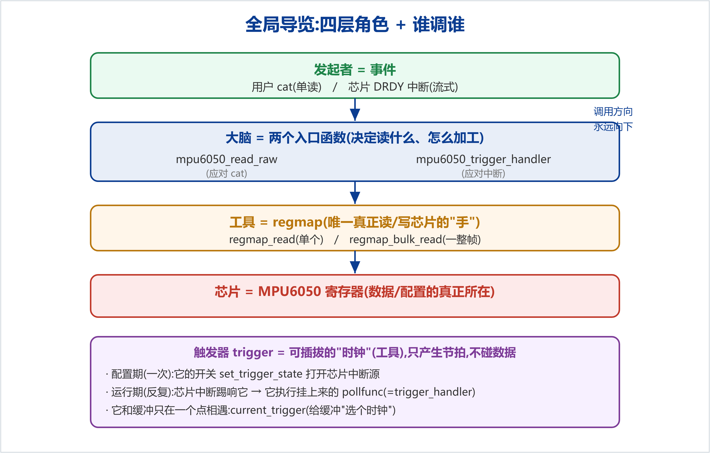
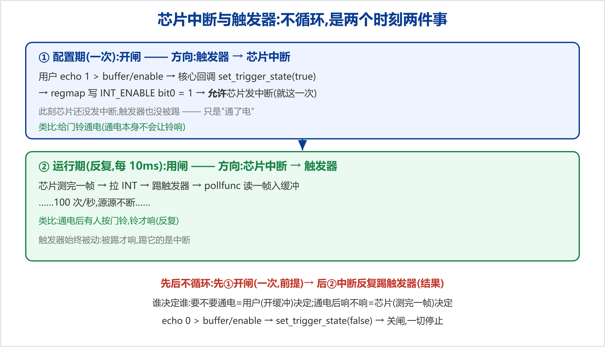
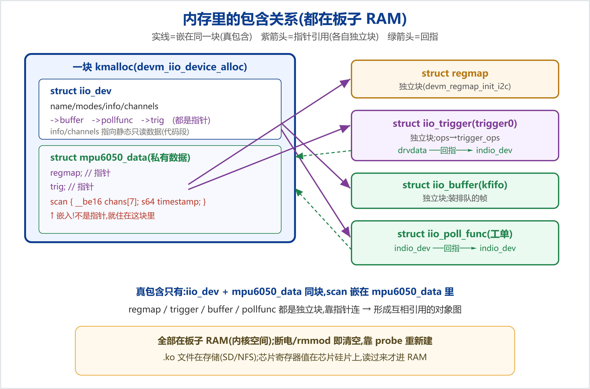
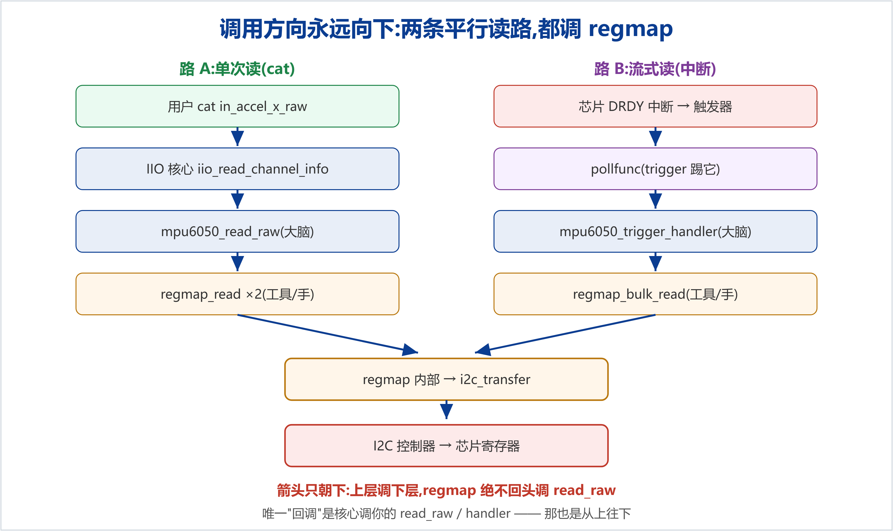

触发缓冲驱动里零件不少:read_raw、trigger_handler、regmap、trigger、buffer、pollfunc……初学最容易把它们的关系搞混——谁调谁、谁装着谁、谁决定谁。其实只要抓住四层角色和一个铁律,全部迎刃而解。

| 角色 | 是谁 | 职责 |
|---|---|---|
| 发起者 | 事件:用户 cat / 芯片 DRDY 中断 | 决定"这次读动作什么时候发生" |
| 大脑 | mpu6050_read_raw / mpu6050_trigger_handler | 决定"读什么、怎么加工",但不亲自碰 I2C |
| 工具(手) | regmap_read / regmap_bulk_read | 唯一真正跟芯片通信、读写寄存器的 |
| 芯片 | MPU6050 寄存器 | 数据与配置的真正所在(不在板子 RAM) |
它登记在 trigger_ops 里,是触发器的开关,由 IIO 核心在用户开/关缓冲时回调:
static int mpu6050_set_trigger_state(struct iio_trigger *trig, bool enable)
{
struct iio_dev *indio_dev = iio_trigger_get_drvdata(trig); // 找回设备
struct mpu6050_data *data = iio_priv(indio_dev); // 拿到 regmap
return regmap_update_bits(data->regmap, MPU6050_REG_INT_ENABLE,
MPU6050_INT_DATA_RDY_EN,
enable ? MPU6050_INT_DATA_RDY_EN : 0); // 翻 bit0
}
trig,所以用 get_drvdata 找回 indio_dev(对应 probe 里的 set_drvdata),再 iio_priv 拿 regmap。regmap_update_bits(reg, 掩码, 值):只动掩码圈住的那一位(bit0 DATA_RDY_EN),其余不碰;开→置 1,关→清 0。用 update_bits 而非 write,避免误伤别的位。这是最该立住的边界:触发器只回答"什么时候",缓冲才负责"采什么、存哪、给谁"。
| 触发器 trigger | 缓冲 buffer | |
|---|---|---|
| 本质 | 一个时钟/发令枪(工具) | 你真正要的东西(目标) |
| 只负责 | 产生"滴答" | 读帧、排队、给用户 |
| 知道数据吗 | 完全不知道有 MPU6050、有 14 字节 | 知道读哪些通道、怎么打包 |
| 能换吗 | 能(DRDY/定时器/手动) | 它就是采集目标 |
set_trigger_state 属于触发器(工具)这侧——它只做"开/关滴答源"这一件事,从不碰"读数据塞缓冲"(那永远在缓冲侧的 pollfunc 里)。两侧只在一个点相遇:current_trigger——运行时 echo mpu6050-dev0 > current_trigger 把缓冲的 pollfunc 挂到触发器上,本质是"给缓冲选一个时钟"。表面像鸡生蛋:开中断的是触发器,踢触发器的又是中断。其实这是两个不同时刻、两件不同的事,把时间线拉开就不矛盾了。

| ① 开中断(set_trigger_state) | ② 中断踢触发器 | |
|---|---|---|
| 是什么 | 允许中断发生(开闸/通电) | 中断真的发生(按铃) |
| 几次 | 一次(开缓冲那刻) | 反复(每 10ms) |
| 方向 | 触发器开关 → 芯片中断源 | 芯片中断 → 触发器 |
先后顺序:一定先①开闸(前提),之后才有②中断反复踢触发器(结果)。没开闸,芯片测完也不会拉 INT。谁决定谁:要不要通电=用户(开缓冲)决定;通电后响不响=芯片(测完一帧)决定。两个决定权在不同角色、不同时刻,不循环。
前面说过"软件对象都在板子 RAM(内核空间)"。再细看谁嵌在谁里、谁指向谁——要分清两种"包含":嵌入(真包含,同一块) vs 指针引用(各自独立块)。

iio_dev + mpu6050_data 是一块 kmalloc;scan(chans[7]+timestamp)嵌在 mpu6050_data 里,不是指针。regmap/trigger/buffer/pollfunc 各是单独分配,靠指针连;trigger->drvdata 与 pollfunc->indio_dev 又回指设备 → 形成互相引用的对象图。channels[]/info/ops 是 static const,在模块代码段(只读数据)。.ko 文件在存储(SD/NFS),芯片寄存器值在芯片硅片上,读过来才进 RAM。三者分属不同层级,别搞混也别搞反方向。

read_raw 和 trigger_handler 是两个平行的"大脑入口"(一个应对 cat、一个应对中断),它们都不亲自碰 I2C,而是都叫 regmap 这只"手"去读:read_raw 叫 regmap_read 读 1 个通道,trigger_handler 叫 regmap_bulk_read 读一整帧。
核心 iio_read_channel_info → 你的 read_raw → regmap_read → i2c_transfer → 芯片
每层调它下面那层。regmap_read 是内核通用库,根本不认识你的 read_raw,只会往更底层(I2C)调。所以永远是 read_raw 调 regmap_read,不是反过来。(唯一的"回调"是核心调你的 read_raw/handler——那也是从上往下。)
read_raw 是"用户问什么答什么"的应答函数:收到 (chan, mask),决定要不要读芯片、读哪、怎么加工、什么格式返回。"配 regmap 参数(算出读哪个寄存器)"只是它 RAW 分支里的第一步;而 SCALE/OFFSET 分支根本不碰 regmap,直接返回常数。
开了缓冲源源不断读数据,read_raw 没失业,反而承担缓冲给不了的活:
| 需求 | 走哪条路 | 用到 read_raw? |
|---|---|---|
| 连续高速拿一大批帧 | 缓冲(trigger_handler→bulk_read) | 否 |
| 把原始数换算成 m/s²(读 scale/offset) | read_raw 的 SCALE/OFFSET 分支 | 是,且必需 |
| 随手看某轴当前值 | read_raw 的 RAW 分支 | 是 |
in_accel_scale——那就是在调 read_raw。SCALE/OFFSET 不碰芯片,永远可用;RAW 单读在生产级驱动里常用 iio_device_claim_direct_mode 在缓冲活动时返回 -EBUSY(我们学习版未加,是可补的进阶点)。把六个剖析点收拢成一套可复用的判断法:
set_trigger_state 是它"开/关自己滴答源"的开关。本文为 MPU-6050 IIO 驱动学习的剖析篇(部件关系/调用方向/职责边界),承接进阶篇"触发缓冲与 DRDY 硬件中断"。系列文档见docs/learning/;配套代码见examples/learning-driver/。仓库:github.com/fyy0619-cell/xiangmu